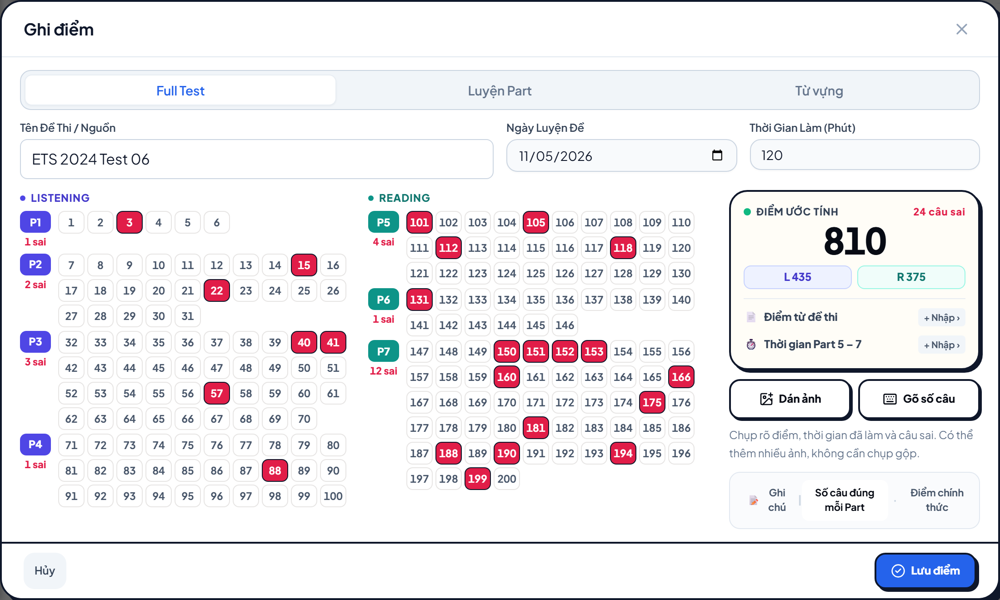

Bên trái là ảnh chụp thật form Ghi điểm hiện tại sau khi gõ các câu sai. Bên phải là thẻ xác nhận đề xuất sau khi AI đọc ảnh kết quả. Câu 188: bên trái đã tính là sai; bên phải là câu AI chưa chắc nên hỏi lại.

Ảnh thu nhỏ để vừa cột; bấm vào ảnh để xem cỡ thật trên màn 1280px.
Mầm đã đọc xong ảnhETS 2024 Test 06 · hôm nay. Bấm vào số nào để sửa nếu đọc nhầm.
| Tiêu chí | Hiện tại | Đề xuất |
|---|---|---|
| Thấy câu nào sai | Rõ: số nằm trong lưới, tô đỏ, có "N sai" từng Part. Nhưng 200 ô làm mắt phải quét cả màn. | Rõ hơn khi đối chiếu với ảnh: chỉ có số câu sai, xếp theo Part, dải liền nhau gộp lại. |
| Thấy vị trí trong đề | Tốt: thấy câu sai nằm đầu hay cuối Part (ví dụ dồn cuối Part 7). | Kém hơn: chỉ còn số. Muốn thấy vị trí phải mở lưới. |
| Sửa câu sai | Chạm trực tiếp trên lưới, một lần bấm. | Bấm "Sửa trên lưới" rồi mới chạm. Thêm một bước. |
| Lượng thứ trên màn | Nhiều: 3 tab, tên đề, ngày, 120 phút, lưới 200 ô, khung điểm, 2 nút nhập, 3 lựa chọn phụ. | Ít: điểm, danh sách câu sai, một câu hỏi, một nút lưu. |
| Điểm hiển thị | Điểm ước tính từ số câu sai (810). | Điểm thật đọc từ ảnh (745), ghi rõ nguồn. |
| Khi AI đọc sai hoặc không có ảnh | Đây chính là cách nhập tay, luôn dùng được. | Cần quay về lưới. Nên giữ lưới làm chế độ sửa và nhập tay. |